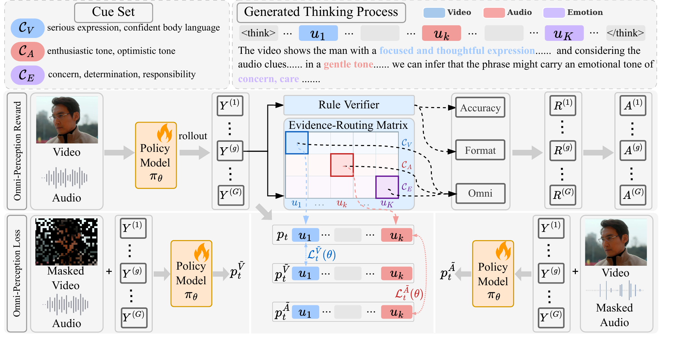
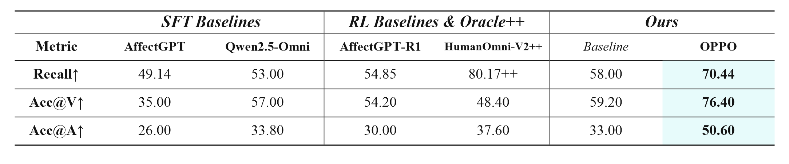
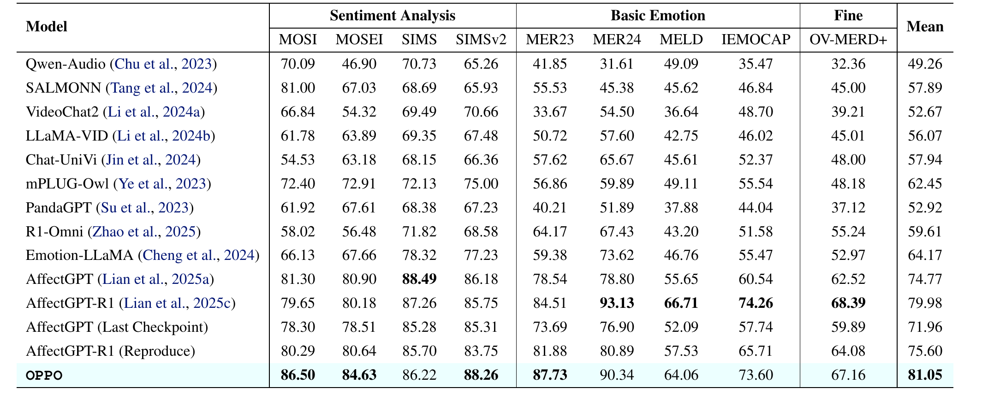
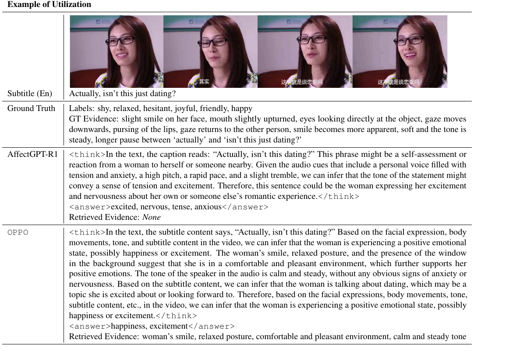
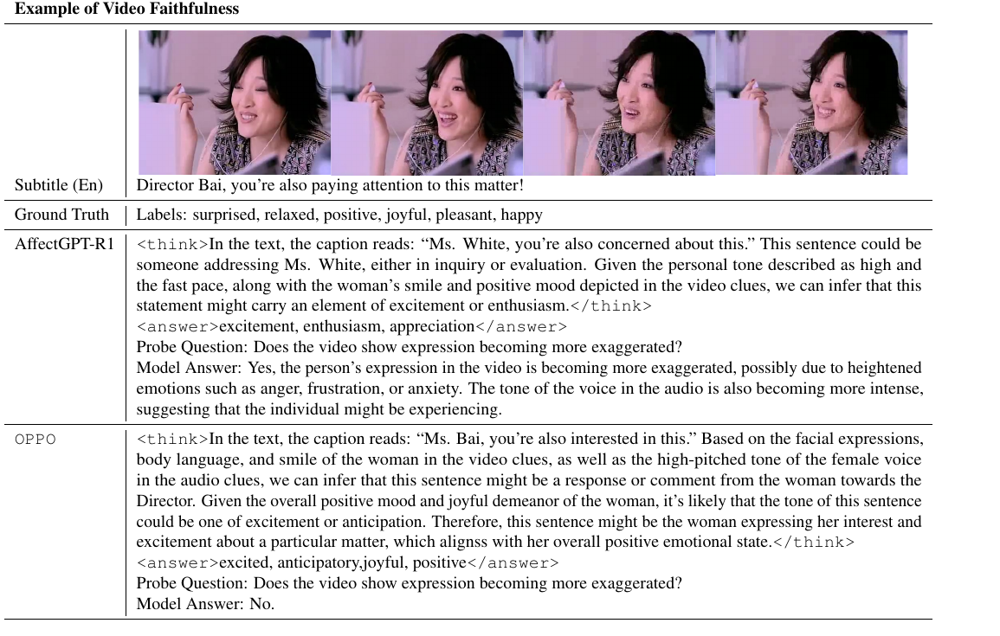

Multimodal emotion reasoning requires models to predict emotions and justify them with visual, acoustic, and linguistic evidence. We find that current emotion-oriented Omni-MLLMs often produce plausible but unreliable reasoning: they may overlook important multimodal cues or hallucinate modality-specific evidence from another modality. OPPO addresses this problem by optimizing perception directly. It combines an Omni-Perception Reward that encourages generated reasoning to recover fine-grained evidence cues with an Omni-Perception Loss that tests whether visual and acoustic statements remain grounded under unimodal masking. We further introduce MEP-Bench to diagnose utilization and faithfulness, and show that better perception leads to stronger performance on MER-UniBench.

Overview of OPPO. The framework first organizes ground-truth reasoning into video cues, audio cues, and emotion cues. During optimization, generated reasoning clauses are matched to these cues to reward evidence coverage. In parallel, unimodal masking creates counterfactual inputs so that modality-specific evidence tokens can be tested for whether they truly depend on the corresponding visual or acoustic signal.
Reward and loss are complementary. The reward asks the model to use enough multimodal evidence, while the loss checks whether each modality-specific statement truly depends on the corresponding input.

MEP-Bench diagnostic benchmark. Derived from OV-MERD, MEP-Bench evaluates whether reasoning uses human-annotated multimodal cues and whether visual or acoustic claims remain faithful under unimodal masking. It separates underutilization from cross-modal hallucination through evidence recall and masked perception accuracy.

Main results on MER-UniBench. OPPO achieves the best mean score among compared Omni-MLLM baselines, with consistent improvements across sentiment analysis, basic emotion recognition, and fine-grained emotion recognition. These results suggest that optimizing perception quality can translate into stronger final emotion predictions.


Qualitative comparison. OPPO retrieves richer multimodal evidence during reasoning and avoids hallucinating modality-specific cues under masking. Compared with the baseline, the generated explanations are more tightly grounded in visible facial behavior, acoustic cues, and emotion-relevant evidence.
@article{han2026oppo,
title={Omni-Perception Policy Optimization for Multimodal Emotion Reasoning},
author={Han, Zhiyuan and Zhu, Beier and Tong, Wenwen and Shao, Pengyang and Song, Peipei and Wang, Xinyi and Chen, Jiangnan and Lu, Lewei and Yang, Xun},
journal={arXiv preprint arXiv:2606.25325},
year={2026}
}We thank the following projects and benchmarks for their excellent contributions: MoSEAR, Emotion-LLaMA, AffectGPT-R1, and HumanOmni-V2.